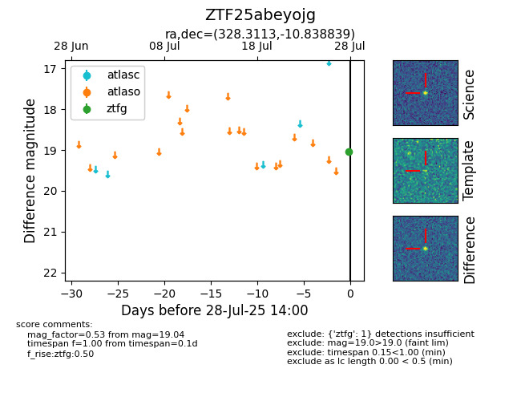

Target ZTF25abeyojg at 2025-08-05 23:02, see:
FINK: fink-portal.org/ZTF25abeyojg
Lasair: lasair-ztf.lsst.ac.uk/objects/ZTF25abeyojg
ALeRCE: alerce.online/object/ZTF25abeyojg
alt names
ZTF25abeyojg (ztf,fink)
coordinates:
equatorial (ra, dec) = (328.3113,-10.83884)
galactic (l, b) = (45.3573,-45.12853)
photometry
last ztfg=19.04
2 ztfg detections
